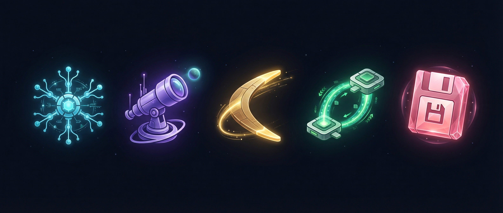

ORBIT gives you 5 atomic patterns for routing work between AI agents. You don't write the prompts — you make agents write prompts for each other, and carry structured artifacts between them. Think of yourself as air traffic control, not a pilot.
ORBIT מספק 5 תבניות אטומיות לניתוב עבודה בין סוכני AI. במקום לכתוב פרומפטים — גורמים לסוכנים לכתוב פרומפטים אחד לשני, ומעבירים ביניהם מסמכים מובנים. הגישה היא מגדל פיקוח, לא טייס.
You know that thing where you have Claude open in one tab, GPT in another, maybe Perplexity for research, and you're copy-pasting between them like a human USB cable? ORBIT turns that chaos into a methodology.
The core idea is simple: instead of writing prompts from scratch every time, you ask one agent to generate a prompt for another agent. The key insight — every generated prompt is completely self-contained. The receiving agent has zero context about your project. Everything it needs is baked into the prompt that ORBIT generates. No "as we discussed" — because nothing was discussed.
In practice, you become a router. You carry structured artifacts (prompts, documents, reports) between specialized agents. Each agent does what it's best at, and the handoff between them is clean and explicit. No context leaks, no "I forgot what we were doing", no re-explaining. You coordinate the orchestra — you don't play every instrument.
המצב מוכר: Claude פתוח בטאב אחד, GPT בטאב שני, אולי Perplexity לריסרץ', ובאמצע — copy-paste אינסופי כמו כבל USB אנושי. ORBIT הופך את הבלאגן הזה למתודולוגיה.
הרעיון בבסיס פשוט: במקום לכתוב פרומפטים מאפס כל פעם, מבקשים מסוכן אחד לייצר פרומפט לסוכן אחר. התובנה המרכזית — כל פרומפט שנוצר הוא עצמאי לחלוטין. הסוכן המקבל לא יודע כלום על הפרויקט. הכל, אבל הכל, נמצא בתוך הפרומפט ש-ORBIT מייצר. בלי "כמו שדיברנו" — כי לא דיברו.
בפרקטיקה, מי שעובד עם ORBIT הופך לנתב (router). מעבירים ארטיפקטים מובנים (פרומפטים, מסמכים, דוחות) בין סוכנים מתמחים. כל סוכן עושה את מה שהוא הכי טוב בו, וההעברה ביניהם נקייה ומפורשת. בלי דליפות קונטקסט, בלי "שכחתי על מה דיברנו", בלי הסברים מחדש. לנצח על התזמורת, לא לנגן על כל כלי.
Each letter in ORBIT is an atomic routing pattern. Chain them together for complex workflows.
כל אות ב-ORBIT היא תבנית ניתוב אטומית. לשרשר אותן יחד לתהליכי עבודה מורכבים.

5 atomic patterns + 2 compound workflows. Each skill generates ready-to-use prompts.
5 תבניות אטומיות + 2 תהליכים מורכבים. כל כלי מייצר פרומפטים מוכנים לשימוש.
Your AI project manager. Orchestrate generates prompts that set up a planning agent to coordinate multi-step projects. The planner creates sequential prompts for worker agents, tracks progress, and adjusts the plan based on status reports. Think of a film director who never touches the camera — just gives precise instructions to every specialist on set. Use it when your project has moving parts that need coordination across multiple agents.
מנהל הפרויקט. Orchestrate מייצר פרומפטים שמקימים סוכן תכנון לתיאום פרויקטים רב-שלביים. המתכנן יוצר פרומפטים סדרתיים לסוכני עבודה, עוקב אחרי התקדמות, ומתאים את התוכנית לפי דוחות סטטוס. כמו במאי שלא נוגע במצלמה — רק נותן הוראות מדויקות לכל מקצוען על הסט. מתאים לפרויקטים עם חלקים זזים שדורשים תיאום בין סוכנים.
/orbit:orchestrateYour eyes on target. Recon generates observation prompts for an agent that has access to a specific target — a repo, a codebase, a live system. It defines exactly what to look at, what to extract, what to ignore, and the report format coming back. Like sending a scout to a known location with a field report template. Use it when you need structured intelligence on something specific.
עיניים על המטרה. Recon מייצר פרומפטי תצפית לסוכן שיש לו גישה ליעד ספציפי — ריפו, קודבייס, מערכת חיה. הוא מגדיר בדיוק מה לבדוק, מה לחלץ, מה להתעלם ממנו, ואיך הדוח צריך להיראות. כמו לשלוח סייר לנקודה מוכרת עם תבנית דיווח מוכנה. מתאים כשצריך מודיעין מובנה על משהו ספציפי.
/orbit:reconYour research department. Boomerang generates TWO prompts: Prompt A defines search queries for external tools (Perplexity, GPT, Gemini, whatever you use), and Prompt B defines an analysis template to process the results. Like sending someone to the library with two notes — what to search for, and how to organize what they find. Use it when you need to query multiple AI tools and synthesize the results into something usable.
מחלקת המחקר. Boomerang מייצר שני פרומפטים: פרומפט A מגדיר שאילתות חיפוש לכלים חיצוניים (Perplexity, GPT, Gemini, או כל כלי אחר), ופרומפט B מגדיר תבנית ניתוח לעיבוד התוצאות. כמו לשלוח מישהו לספרייה עם שני פתקים — מה לחפש, ואיך לסדר את מה שנמצא. מתאים כשצריך לשלוח שאילתות למספר כלי AI ולסנתז את התוצאות למשהו שמיש.
/orbit:boomerangYour referral system. Interchange generates agent-to-agent handoff prompts. In Sender Mode, the completing agent writes a referral — packaging exactly what the next agent needs. In Receiver Mode, the receiving agent writes what it needs from the sender. Zero context loss, like a referral between medical specialists. Use it when one agent's output needs to become another agent's input.
מערכת ההפניות. Interchange מייצר פרומפטי העברה בין סוכנים. במצב Sender, הסוכן שסיים כותב הפניה — אורז בדיוק את מה שהסוכן הבא צריך. במצב Receiver, הסוכן המקבל כותב מה הוא צריך מהשולח. אפס אובדן קונטקסט, כמו הפניה בין רופאים מומחים. מתאים כשהפלט של סוכן אחד צריך להפוך לאינפוט של סוכן אחר.
/orbit:interchangeYour save game button. Transfer generates a state capture prompt — the agent produces a comprehensive continuation document. Not a summary — a full save-state. Everything you need to pick up exactly where you left off in a fresh session. Like saving a video game, not reviewing the game. Use it when conversations get long and you need a clean restart without losing anything.
כפתור ה-Save Game. Transfer מייצר פרומפט לכידת מצב — הסוכן מפיק מסמך המשכיות מלא. לא סיכום — שמירת מצב מלאה. הכל מה שצריך כדי להמשיך בדיוק מאיפה שעצרנו בסשן חדש. כמו לשמור משחק, לא לעשות ריוויו על המשחק. מתאים כששיחות מתארכות וצריך restart נקי בלי לאבד כלום.
/orbit:transferThe advisor layer. Not sure which ORBIT pattern fits your situation? Human Router diagnoses your multi-agent scenario, recommends the right pattern, explains trade-offs, and points you to the correct skill. It doesn't generate prompts itself — it routes you to the one that does.
שכבת הייעוץ. לא ברור איזו תבנית ORBIT מתאימה למצב? Human Router מאבחן את התרחיש, ממליץ על התבנית הנכונה, מסביר trade-offs, ומפנה לכלי המתאים. הוא לא מייצר פרומפטים בעצמו — הוא מנתב לכלי שכן.
/orbit:human-routerThe compound research-to-writing pipeline. 4 stages: scatter search across AI tools, index all findings, plan chapters, execute tracked writing. Turns any topic into a structured, cross-validated knowledge base. Useful when you need to go from "I know nothing about X" to a comprehensive, organized document.
פייפליין מחקר-לכתיבה מורכב. 4 שלבים: חיפוש פזור על פני כלי AI, אינדוקס כל הממצאים, תכנון פרקים, כתיבה עם מעקב. הופך כל נושא למאגר ידע מובנה ומצולב. שימושי למעבר מ"לא יודעים כלום על X" למסמך מקיף ומסודר.
/orbit:kb-builderThe full design research pipeline. 10 stages from PRD and design brief through research, mockup generation, human curation, and all the way to production-ready design system. Research-driven UI/UX design where every decision is backed by actual findings, not vibes.
פייפליין העיצוב המלא. 10 שלבים מ-PRD ובריף דרך מחקר, יצירת מוקאפים, קוראציה אנושית, ועד מערכת עיצוב מוכנה לפרודקשן. עיצוב UI/UX מבוסס מחקר — כל החלטה נסמכת על ממצאים אמיתיים, לא על ויבס.
/orbit:design-pipelineYou don't write prompts between agents — you make them write prompts for each other.
לא כותבים פרומפטים בין סוכנים — גורמים להם לכתוב פרומפטים אחד לשני.
Say you need to research your competitors' pricing strategies before a board meeting.
Open Claude Code and run /orbit:boomerang. Describe the mission: "I need a competitive analysis of pricing models for developer tools in the AI space — specifically Cursor, Windsurf, and Copilot." ORBIT asks a few clarifying questions, then generates two prompts.
Prompt A contains specific search queries, optimized for the tools you'll use. Paste it into Perplexity, or GPT with web search, or whatever you prefer. The prompt tells the tool exactly what to look for, what format to return results in, and what to ignore. Collect the raw findings.
Paste the raw research results back into Claude Code along with Prompt B. This prompt is an analysis template — it tells the agent how to process, compare, and structure the findings. The output is a clean, structured competitive analysis. Not a wall of text — a document with clear categories, comparisons, and takeaways.
Maybe the analysis feeds into a presentation (use /orbit:interchange to hand it off to a presentation-building agent). Maybe it feeds into a larger strategy document (use /orbit:orchestrate to coordinate the full project). The output is always structured enough to become input for the next step.
That's the loop. Describe the mission, ORBIT generates the prompts, carry them between agents, structured artifacts flow back. The human in the middle is the router — the agents do the heavy lifting.
נניח שצריך לחקור אסטרטגיות תמחור של מתחרים לפני ישיבת דירקטוריון.
פותחים את Claude Code ומריצים /orbit:boomerang. מתארים את המשימה: "צריך ניתוח תחרותי של מודלי תמחור לכלי פיתוח בעולם ה-AI — ספציפית Cursor, Windsurf ו-Copilot." ORBIT שואל כמה שאלות הבהרה, ואז מייצר שני פרומפטים.
פרומפט A מכיל שאילתות חיפוש ספציפיות, מותאמות לכלים הרלוונטיים. מדביקים אותו ב-Perplexity, או ב-GPT עם חיפוש אינטרנט, או בכל כלי אחר. הפרומפט אומר לכלי בדיוק מה לחפש, באיזה פורמט להחזיר תוצאות, וממה להתעלם. אוספים את הממצאים הגולמיים.
מדביקים את תוצאות המחקר הגולמיות חזרה ב-Claude Code יחד עם פרומפט B. הפרומפט הזה הוא תבנית ניתוח — הוא אומר לסוכן איך לעבד, להשוות ולמבנה את הממצאים. הפלט הוא ניתוח תחרותי נקי ומובנה. לא קיר של טקסט — מסמך עם קטגוריות ברורות, השוואות ומסקנות.
אולי הניתוח מזין מצגת (להשתמש ב-/orbit:interchange כדי להעביר אותו לסוכן שבונה מצגות). אולי הוא מזין מסמך אסטרטגיה רחב יותר (להשתמש ב-/orbit:orchestrate כדי לתאם את הפרויקט המלא). הפלט תמיד מובנה מספיק כדי להפוך לאינפוט של הצעד הבא.
זה הלופ. מתארים את המשימה, ORBIT מייצר את הפרומפטים, מעבירים אותם בין סוכנים, וארטיפקטים מובנים זורמים בחזרה. האדם באמצע הוא הנתב — הסוכנים עושים את העבודה הכבדה.
Install as a Claude Code plugin. All skills become available as slash commands.
מותקן כפלאגין של Claude Code. כל הכלים הופכים זמינים כפקודות סלאש.
In Claude Code, run:
/install-plugin github:benakiva/orbit-plugin
Run /orbit:help to see all available commands. You should see all 5 atomic patterns and 2 compound workflows.
Try /orbit:boomerang with a simple research task. Follow the prompts, carry the artifacts, see the results.
ב-Claude Code, להריץ:
/install-plugin github:benakiva/orbit-plugin
להריץ /orbit:help כדי לראות את כל הפקודות הזמינות. צריכים לראות את כל 5 התבניות האטומיות ו-2 הפייפליינים המורכבים.
לנסות /orbit:boomerang עם משימת מחקר פשוטה. לעקוב אחרי הפרומפטים, להעביר את הארטיפקטים, לראות תוצאות.
| Command | What it does |
|---|---|
| /orbit:orchestrate | Set up a planning agent for multi-step projects |
| /orbit:recon | Generate observation prompts for a specific target |
| /orbit:boomerang | Generate research + analysis prompt pair |
| /orbit:interchange | Generate agent-to-agent handoff prompts |
| /orbit:transfer | Generate a full state capture for session continuity |
| /orbit:kb-builder | Run the 4-stage research-to-knowledge-base pipeline |
| /orbit:design-pipeline | Run the 10-stage design research pipeline |
| /orbit:help | Show all commands and quick usage guide |
| פקודה | מה היא עושה |
|---|---|
| /orbit:orchestrate | הקמת סוכן תכנון לפרויקטים רב-שלביים |
| /orbit:recon | יצירת פרומפטי תצפית ליעד ספציפי |
| /orbit:boomerang | יצירת זוג פרומפטים מחקר + ניתוח |
| /orbit:interchange | יצירת פרומפטי העברה בין סוכנים |
| /orbit:transfer | יצירת לכידת מצב מלאה להמשכיות סשן |
| /orbit:kb-builder | הרצת פייפליין מחקר-למאגר-ידע ב-4 שלבים |
| /orbit:design-pipeline | הרצת פייפליין מחקר עיצובי ב-10 שלבים |
| /orbit:help | הצגת כל הפקודות ומדריך שימוש מהיר |
Prefer to install manually? Download the plugin ZIP and place it in your project.
Unzip and copy the contents into your project's .claude/plugins/orbit/ directory.
Restart Claude Code and run /orbit:help to confirm it works.
מעדיפים להתקין ידנית? להוריד את ה-ZIP של הפלאגאין ולהעתיק לפרויקט.
לפרוס את ה-ZIP ולהעתיק את התוכן לתיקייה .claude/plugins/orbit/ בפרויקט.
להפעיל מחדש את Claude Code ולהריץ /orbit:help כדי לוודא שזה עובד.
Clone the repo and install locally to customize patterns:
git clone https://github.com/dartaryan/orbit-plugin.git
cd orbit-plugin
# Follow local setup instructions in CONTRIBUTING.md
לשבט את הריפו ולהתקין מקומית כדי להתאים אישית את התבניות:
git clone https://github.com/dartaryan/orbit-plugin.git
cd orbit-plugin
# לעקוב אחרי הוראות ההתקנה ב-CONTRIBUTING.md
| Situation | Use This | Why |
|---|---|---|
| Multi-step project with 3+ agents involved | Orchestrate | You need a planner to coordinate the sequence and track progress |
| Need to analyze a codebase or repo you have access to | Recon | Structured observation with a defined report format |
| Research a topic using multiple AI tools | Boomerang | Generates both the search queries and the analysis framework |
| One agent finished work, another needs to continue it | Interchange | Clean handoff with zero context loss |
| Conversation getting too long, need a fresh start | Transfer | Full state capture so you lose nothing |
| Need to build a comprehensive knowledge base from scratch | KB Builder | End-to-end pipeline from scattered research to organized document |
| Designing a product UI/UX with research backing | Design Pipeline | Full 10-stage process from brief to production design system |
| Not sure which pattern to use | Boomerang | Research first, then decide your next move based on findings |
| מצב | תבנית מתאימה | למה |
|---|---|---|
| פרויקט רב-שלבי עם 3+ סוכנים מעורבים | Orchestrate | צריך מתכנן שיתאם את הרצף ויעקוב אחרי התקדמות |
| צריך לנתח קודבייס או ריפו שיש אליו גישה | Recon | תצפית מובנית עם פורמט דיווח מוגדר |
| לחקור נושא באמצעות מספר כלי AI | Boomerang | מייצר גם את שאילתות החיפוש וגם את מסגרת הניתוח |
| סוכן אחד סיים עבודה, אחר צריך להמשיך אותה | Interchange | העברה נקייה עם אפס אובדן קונטקסט |
| שיחה מתארכת מידי, צריך התחלה נקייה | Transfer | לכידת מצב מלאה כדי שלא לאבד כלום |
| צריך לבנות מאגר ידע מקיף מאפס | KB Builder | פייפליין מקצה לקצה ממחקר מפוזר למסמך מסודר |
| עיצוב UI/UX למוצר עם גיבוי מחקרי | Design Pipeline | תהליך מלא ב-10 שלבים מבריף ועד מערכת עיצוב לפרודקשן |
| לא ברור איזו תבנית מתאימה | Boomerang | מחקר קודם, ואז להחליט מה הצעד הבא לפי הממצאים |
You need to be comfortable working with AI tools and copy-pasting between them. If you're already using Claude, ChatGPT, or similar tools regularly, you have all the skills you need. ORBIT is installed through Claude Code, which is a terminal-based tool, so basic comfort with a command line helps. But you don't need to be a developer — the prompts ORBIT generates are plain language, not code.
צריך להרגיש בנוח לעבוד עם כלי AI ולעשות copy-paste ביניהם. מי שכבר משתמש ב-Claude, ChatGPT, או כלים דומים באופן קבוע — יש את כל מה שצריך. ORBIT מותקן דרך Claude Code, שזה כלי מבוסס טרמינל, אז נוחות בסיסית עם command line עוזרת. אבל לא חייבים להיות מפתחים — הפרומפטים ש-ORBIT מייצר הם בשפה טבעית, לא קוד.
That's actually the whole point. ORBIT is built on the idea that you route work between different AI tools. Boomerang, for example, generates prompts specifically designed for external tools like Perplexity, GPT, or Gemini. The plugin itself runs in Claude Code, but the prompts it generates are tool-agnostic — they work wherever you paste them.
זו בעצם כל הפואנטה. ORBIT בנוי על הרעיון של ניתוב עבודה בין כלי AI שונים. Boomerang, למשל, מייצר פרומפטים שמותאמים ספציפית לכלים חיצוניים כמו Perplexity, GPT, או Gemini. הפלאגין עצמו רץ ב-Claude Code, אבל הפרומפטים שהוא מייצר הם tool-agnostic — הם עובדים בכל מקום שמדביקים אותם.
Interchange is for handoffs between agents working on the same project — Agent A finishes a task and Agent B picks up a related task. The context flows forward. Transfer is for continuity within a single agent's work — the conversation got too long, so you save state and start fresh. Interchange moves work sideways (between agents). Transfer moves work forward (across sessions).
Interchange מיועד להעברות בין סוכנים שעובדים על אותו פרויקט — סוכן A סיים משימה וסוכן B מרים משימה קשורה. הקונטקסט זורם קדימה. Transfer מיועד להמשכיות בתוך עבודה של סוכן בודד — השיחה התארכה מידי, אז שומרים מצב ומתחילים מחדש. Interchange מזיז עבודה הצידה (בין סוכנים). Transfer מזיז עבודה קדימה (בין סשנים).
Compound workflows are combinations of atomic patterns wired together. KB Builder combines Boomerang (research) with Orchestrate (coordinated writing). Design Pipeline adds more stages on top. You can also create your own compound workflows by chaining atomic patterns — the 5 patterns are building blocks.
פייפליינים מורכבים הם שילובים של תבניות אטומיות מחוברות יחד. KB Builder משלב Boomerang (מחקר) עם Orchestrate (כתיבה מתואמת). Design Pipeline מוסיף עוד שלבים מעל. אפשר גם ליצור פייפליינים מורכבים עצמאיים על ידי שרשור תבניות אטומיות — 5 התבניות הן אבני בניין.
Yes, and you should. The prompts ORBIT generates are starting points — they're well-structured and complete, but you know your context best. Feel free to edit, extend, or trim them before pasting into the receiving agent. The structure is the value — you can always adjust the specifics.
כן, ואפילו רצוי. הפרומפטים ש-ORBIT מייצר הם נקודות פתיחה — מובנים היטב ומלאים, אבל מי שעובד עם הכלי מכיר את הקונטקסט הכי טוב. אפשר לערוך, להרחיב, או לקצר אותם לפני שמדביקים בסוכן המקבל. המבנה הוא הערך — תמיד אפשר לכוונן את הפרטים.
Iterate. If Prompt A in Boomerang returns low-quality search results, refine the queries and run them again. If an Orchestrate plan doesn't fit your actual needs, feed the status back and let the planner adjust. ORBIT is designed for loops, not straight lines. The human in the middle is the quality control layer.
עושים איטרציה. אם פרומפט A ב-Boomerang מחזיר תוצאות חיפוש באיכות נמוכה, משפרים את השאילתות ומריצים שוב. אם תוכנית של Orchestrate לא מתאימה לצרכים, מזינים את הסטטוס בחזרה ונותנים למתכנן להתאים. ORBIT מעוצב ללופים, לא לקווים ישרים. האדם באמצע הוא שכבת בקרת האיכות.
Orchestrate sets up a dedicated planning agent — an AI "project manager" that coordinates multi-step projects. The Orchestrator never does the work itself. It breaks the project into sequential steps, generates a self-contained prompt for each step, and adjusts the plan based on status reports you bring back from worker agents.
Building a SaaS landing page. You run /orbit:orchestrate and describe the project. The Orchestrator plans 5 phases: copywriting, design research, component development, integration, and QA. It generates Prompt #1 for the copywriting agent. You carry the prompt, get the copy, bring the status report back. The Orchestrator reviews, then generates Prompt #2 for design research — now informed by the copy. Each step builds on the last.
Orchestrate מקים סוכן תכנון ייעודי — "מנהל פרויקט" AI שמתאם פרויקטים רב-שלביים. ה-Orchestrator אף פעם לא עושה את העבודה בעצמו. הוא מפרק את הפרויקט לשלבים סדרתיים, מייצר פרומפט עצמאי לכל שלב, ומתאים את התוכנית לפי דוחות סטטוס שמביאים חזרה מסוכני העבודה.
בניית דף נחיתה ל-SaaS. מריצים /orbit:orchestrate ומתארים את הפרויקט. ה-Orchestrator מתכנן 5 שלבים: כתיבת טקסט, מחקר עיצובי, פיתוח רכיבים, אינטגרציה, ו-QA. הוא מייצר פרומפט #1 לסוכן הקופירייטינג. מעבירים את הפרומפט, מקבלים את הטקסט, מביאים דוח סטטוס חזרה. ה-Orchestrator סוקר, ואז מייצר פרומפט #2 למחקר עיצובי — עכשיו עם מידע מהקופי. כל שלב בונה על הקודם.
Recon generates a precise observation prompt for an agent that has access to a specific target — a repo, codebase, live system, or another AI agent's project. It defines exactly what to look at, what to extract, what to ignore, and the exact format for the report. Think of it as sending a scout to a known location with a field report template.
Preparing for a migration. You need to understand a legacy API before building a replacement. Run /orbit:recon, describe the target repo. ORBIT generates an observation prompt scoped to API routes, data models, and auth middleware. You paste it into an agent with repo access. It returns a structured report: endpoints, schemas, patterns, dependencies. You now have clean intel to feed into the migration plan.
Recon מייצר פרומפט תצפית מדויק לסוכן שיש לו גישה ליעד ספציפי — ריפו, קודבייס, מערכת חיה, או פרויקט של סוכן AI אחר. הוא מגדיר בדיוק מה לבדוק, מה לחלץ, מה להתעלם ממנו, ואת הפורמט המדויק של הדוח. כמו לשלוח סייר למיקום מוכר עם תבנית דיווח שדה.
הכנה למיגרציה. צריך להבין API ישן לפני בניית תחליף. מריצים /orbit:recon, מתארים את ריפו היעד. ORBIT מייצר פרומפט תצפית ממוקד בנתיבי API, מודלי נתונים, ו-auth middleware. מדביקים אותו בסוכן עם גישה לריפו. הוא מחזיר דוח מובנה: endpoints, סכמות, דפוסים, תלויות. עכשיו יש מודיעין נקי להזין לתוכנית המיגרציה.
Boomerang generates two prompts for external research. Like sending someone to the library with two notes — one says which books to find and where to look, the other says how to take notes so you can use them immediately. The requesting agent designs both the question AND the answer format.
Competitive pricing analysis. Run /orbit:boomerang: "I need pricing models for AI dev tools — Cursor, Windsurf, Copilot." ORBIT generates Prompt A with queries optimized for Perplexity (factual pricing data) and GPT (analysis angles). You paste A into each tool, collect raw results. Then paste everything into a new chat with Prompt B. The analysis agent produces a structured comparison table with confidence ratings and gaps.
Boomerang מייצר שני פרומפטים למחקר חיצוני. כמו לשלוח מישהו לספרייה עם שני פתקים — אחד אומר אילו ספרים למצוא ואיפה לחפש, והשני אומר איך לרשום הערות כדי שתוכלו להשתמש בהן מיד. הסוכן המבקש מעצב גם את השאלה וגם את פורמט התשובה.
ניתוח תמחור תחרותי. מריצים /orbit:boomerang: "צריך מודלי תמחור לכלי פיתוח AI — Cursor, Windsurf, Copilot." ORBIT מייצר פרומפט A עם שאילתות מותאמות ל-Perplexity (נתוני תמחור עובדתיים) ו-GPT (זוויות ניתוח). מדביקים A בכל כלי, אוספים תוצאות גולמיות. ואז מדביקים הכל בצ'אט חדש עם פרומפט B. סוכן הניתוח מייצר טבלת השוואה מובנית עם דירוגי ביטחון ופערים.
Interchange generates agent-to-agent handoff prompts. Instead of you translating between agents, one of the agents writes the connecting prompt. It has two modes: Sender Mode (completing agent writes a referral) and Receiver Mode (receiving agent specifies what it needs). Zero context loss — like a referral between medical specialists.
Design-to-development handoff. A design agent just finished the UI mockups and specs. Run /orbit:interchange in Receiver Mode. The dev agent writes a preparation request: "I need component hierarchy, exact color tokens, spacing values, and responsive breakpoints — in this specific format." You carry that request to the design agent, who fills it out. The dev agent gets exactly what it needs to start coding, with zero ambiguity.
Interchange מייצר פרומפטי העברה בין סוכנים. במקום שאתם תתרגמו בין סוכנים, אחד הסוכנים כותב את פרומפט החיבור. יש שני מצבים: Sender Mode (הסוכן שמסיים כותב הפניה) ו-Receiver Mode (הסוכן המקבל מגדיר מה הוא צריך). אפס אובדן קונטקסט — כמו הפניה בין רופאים מומחים.
העברה מעיצוב לפיתוח. סוכן עיצוב סיים את המוקאפים והמפרטים. מריצים /orbit:interchange ב-Receiver Mode. סוכן הפיתוח כותב בקשת הכנה: "אני צריך היררכיית רכיבים, טוקני צבע מדויקים, ערכי ריווח, ו-breakpoints רספונסיביים — בפורמט הספציפי הזה." מעבירים את הבקשה לסוכן העיצוב שממלא אותה. סוכן הפיתוח מקבל בדיוק מה שהוא צריך כדי להתחיל לקודד, בלי שום עמימות.
Transfer generates a state capture prompt — the agent produces a comprehensive continuation document. Not a summary (summaries compress and lose detail). Transfer is a full save-state: everything needed for seamless continuation in a fresh session. When context windows get long, agents degrade — Transfer solves this by externalizing the full working state.
Mid-project checkpoint. You've been building a feature for 40 messages and the agent is getting slower. Run /orbit:transfer. The agent produces a full save-state: what's built, what's pending, every decision and why. Open a fresh session, paste the Transfer document, and continue exactly where you left off — except now the agent is fast and sharp again.
Transfer מייצר פרומפט לכידת מצב — הסוכן מפיק מסמך המשכיות מקיף. לא סיכום (סיכום מכווץ ומאבד פרטים). Transfer הוא שמירת מצב מלאה: הכל מה שצריך להמשכיות חלקה בסשן חדש. כשחלונות קונטקסט מתארכים, סוכנים מתדרדרים — Transfer פותר את זה על ידי הוצאת מצב העבודה המלא.
Checkpoint באמצע פרויקט. בניתם פיצ'ר כבר 40 הודעות והסוכן מאט. מריצים /orbit:transfer. הסוכן מייצר שמירת מצב מלאה: מה נבנה, מה ממתין, כל החלטה ולמה. פותחים סשן חדש, מדביקים את מסמך ה-Transfer, וממשיכים בדיוק מאיפה שעצרתם — רק שעכשיו הסוכן שוב מהיר וחד.
Human Router is the advisor layer. It doesn't generate prompts itself — it diagnoses your multi-agent scenario, recommends the right ORBIT pattern, explains the trade-offs, and points you to the correct skill. Think of it as a triage nurse for your AI workflows: it figures out what you need and routes you to the right specialist.
"I'm building an app and I need help organizing the work." Run /orbit:human-router and describe the situation. It might say: "Start with Orchestrate to plan the phases. Within the research phase, use Boomerang for external data. When the design agent finishes, use Interchange to hand off to the dev agent. Checkpoint with Transfer every 30 messages." One recommendation, clear reasoning, ready to go.
Human Router הוא שכבת הייעוץ. הוא לא מייצר פרומפטים בעצמו — הוא מאבחן את התרחיש שלכם, ממליץ על תבנית ORBIT הנכונה, מסביר את ה-trade-offs, ומפנה לכלי הנכון. כמו אחות מיון לתהליכי ה-AI שלכם: היא מבינה מה צריך ומנתבת למומחה הנכון.
"אני בונה אפליקציה וצריך עזרה לארגן את העבודה." מריצים /orbit:human-router ומתארים את המצב. הוא עלול להגיד: "תתחילו עם Orchestrate כדי לתכנן את השלבים. בשלב המחקר, תשתמשו ב-Boomerang לנתונים חיצוניים. כשסוכן העיצוב מסיים, תשתמשו ב-Interchange כדי להעביר לסוכן הפיתוח. תעשו Checkpoint עם Transfer כל 30 הודעות." המלצה אחת, נימוק ברור, מוכנים לצאת לדרך.
KB Builder is an assembly line for knowledge. It takes any topic and turns it into a structured, cross-validated knowledge base through a 4-stage pipeline. Each stage produces exactly what the next stage needs. You act as the router, carrying artifacts between stages.
| Stage | Name | What Happens | Input | Output |
|---|---|---|---|---|
| 0 | Scatter Search | Uses Boomerang (B) to fan out research. The same prompt runs identically across multiple AI tools in parallel — Perplexity, Claude, GPT, Gemini, Grok. Each tool returns findings from its perspective: facts, frameworks, developments, perspectives, examples, and open questions. | Your topic description | One research file per tool (research-[tool].md) |
| 1 | Index Mapping | An agent scans all research files and builds a master index table. Every distinct piece of information gets its own row with sub-topic grouping, source file attribution, quality rating (HIGH/MEDIUM/LOW), and contradiction flagging. Duplicates are merged with all sources listed. | All research files from Stage 0 | Master index table (kb-index.md) |
| 2 | Chapter Planning | An agent analyzes the index and proposes a chapter structure — logically ordered from foundational to advanced. Every index entry maps to exactly one chapter (no orphans). After you approve the structure, it generates a self-contained writing prompt for each chapter with cross-validation rules. | Master index from Stage 1 | Chapter plan + writing prompts (kb-chapters-plan.md) |
| 3 | Tracked Execution | Uses Orchestrate (O) logic. Produces a single self-executing tracker document with a tracking table, all writing prompts, and a completed chapters section. Agents pick up the tracker, find the next unfinished chapter, write it, update the status, and report. Chapters with no dependencies can run in parallel. | Chapter plan from Stage 2 | Self-executing tracker (kb-tracker.md) that produces finished chapters |
KB Builder הוא פס ייצור לידע. הוא לוקח כל נושא והופך אותו למאגר ידע מובנה ומאומת-צולב דרך פייפליין של 4 שלבים. כל שלב מייצר בדיוק את מה שהשלב הבא צריך. אתם משמשים כנתבים, מעבירים ארטיפקטים בין השלבים.
| שלב | שם | מה קורה | קלט | פלט |
|---|---|---|---|---|
| 0 | Scatter Search | משתמש ב-Boomerang (B) כדי לפזר מחקר. אותו פרומפט רץ במקביל על פני מספר כלי AI — Perplexity, Claude, GPT, Gemini, Grok. כל כלי מחזיר ממצאים מהזווית שלו: עובדות, מסגרות, התפתחויות, נקודות מבט, דוגמאות, ושאלות פתוחות. | תיאור הנושא שלכם | קובץ מחקר לכל כלי (research-[tool].md) |
| 1 | Index Mapping | סוכן סורק את כל קבצי המחקר ובונה טבלת אינדקס ראשית. כל פיסת מידע ייחודית מקבלת שורה משלה עם קיבוץ לפי תת-נושא, ייחוס קובץ מקור, דירוג איכות (HIGH/MEDIUM/LOW), וסימון סתירות. כפילויות ממוזגות עם כל המקורות מצוינים. | כל קבצי המחקר משלב 0 | טבלת אינדקס ראשית (kb-index.md) |
| 2 | Chapter Planning | סוכן מנתח את האינדקס ומציע מבנה פרקים — סדור לוגית מיסודות למתקדם. כל רשומה באינדקס ממופית לפרק אחד בדיוק (בלי יתומים). אחרי שמאשרים את המבנה, הוא מייצר פרומפט כתיבה עצמאי לכל פרק עם כללי אימות צולב. | אינדקס ראשי משלב 1 | תוכנית פרקים + פרומפטי כתיבה (kb-chapters-plan.md) |
| 3 | Tracked Execution | משתמש בלוגיקת Orchestrate (O). מייצר מסמך מעקב בודד עם טבלת מעקב, כל פרומפטי הכתיבה, ואזור פרקים שהושלמו. סוכנים לוקחים את המעקב, מוצאים את הפרק הבא שלא נכתב, כותבים אותו, מעדכנים סטטוס ומדווחים. פרקים בלי תלויות יכולים לרוץ במקביל. | תוכנית פרקים משלב 2 | מסמך מעקב (kb-tracker.md) שמייצר פרקים גמורים |
Design Pipeline is an assembly line for visual design. It takes a PRD and product brief and turns them into a complete, research-driven design system through a 10-stage pipeline. The central question it answers: "How should this app look if the world's best designers built it — creative, effective, and high-converting?" Every design decision is backed by actual findings, not vibes.
| Stage | Name | What Happens | Input | Output |
|---|---|---|---|---|
| 0 | Research Plan | Uses Boomerang (B) to generate a comprehensive design research plan covering 10 categories: similar apps, competitors, UI patterns, colors, typography, micro-interactions, conversion layouts, accessibility, spacing/shadow trends, and innovative features from adjacent categories. Produces 3-5 query variations per category. | PRD + Product Brief | Research plan with targeted queries (design-research-plan.md) |
| 1 | Index Mapping | Uses KB Builder Stage 1. Scans all design research files and builds a master index table of every design recommendation, pattern, color, typeface, layout approach, and interaction detail across all sources. Grouped by the 10 research categories. | Research files from multiple AI tools | Master design index (design-index.md) |
| 2 | Chapter Planning | Uses KB Builder Stage 2. Analyzes the design index and proposes chapter structure aligned with design decision categories. Each chapter feeds directly into design system decisions. | Design index from Stage 1 | Design research chapters (design-research-chapters.md) |
| 3 | Prototype Prompt | Creates a reusable mockup prompt template from the PRD. This template will be run once per research document to produce an HTML mockup. It instructs the builder to extract all visual recommendations, build a standalone HTML file with real product content, and include working CSS animations. | PRD + Product Brief | Reusable mockup template (mockup-prompt-template.md) |
| 4 | Mockup Generation | Runs the mockup template once per research document. Each run opens a new chat, pastes the template + one research doc, and gets a complete standalone HTML mockup. Result: ~10 different design directions, each inspired by different research sources. Mockups are independent and can run in parallel. | Mockup template + 1 research doc each | ~10 HTML mockup files (mockup-[N]-[source].html) |
| 5 | Human Curation | The critical human-in-the-loop step. You review each mockup in the browser and fill out a curation template: what you liked, what you didn't, and specific elements to "steal" for the final design. Your taste guides the final direction. This is the most important stage. | Your eyes + all mockups | Curation notes (curation-notes.md) |
| 6 | Vision Aggregation | Synthesizes all curation notes into a single unified design vision: design direction, color + typography decisions, layout patterns, interaction style, component inventory, and rejected patterns (explicit no-go's from your "didn't like" notes). | Curation notes + PRD + Brief | Unified design vision (design-vision.md) |
| 7 | Design System | Produces a complete design system with exact, implementable values: color tokens (hex + HSL), typography scale (rem/px), spacing system, border radius, shadows, component specs with all states (hover/active/focus/disabled), animation tokens, responsive breakpoints, and accessibility requirements. | Vision document + PRD | Complete design system (design-system.md) |
| 8 | Screen Prompts | Generates one precise prompt per screen. Each prompt specifies exact layout, exact colors (token + hex), exact typography, exact spacing, all component states, animation specs, real content from the PRD, and responsive notes. Precise enough for pixel-accurate implementation. | Design system + Vision + PRD | Per-screen prompts (screen-prompts.md) |
| 9 | Production | Take each screen prompt to your chosen production tool (Figma, HTML/CSS, React, any AI builder). Screen prompts are independent and can run in parallel. Each prompt is self-contained with every value specified — no guessing, no "make it look nice." | Screen prompts from Stage 8 | Actual production screens |
Design Pipeline הוא פס ייצור לעיצוב ויזואלי. הוא לוקח PRD ובריף מוצר והופך אותם למערכת עיצוב מלאה ומבוססת מחקר דרך פייפליין של 10 שלבים. השאלה המרכזית שהוא עונה עליה: "איך האפליקציה הזו צריכה להיראות אם המעצבים הכי טובים בעולם היו בונים אותה — יצירתית, אפקטיבית, וממירה?" כל החלטה עיצובית נסמכת על ממצאים אמיתיים, לא על ויבס.
| שלב | שם | מה קורה | קלט | פלט |
|---|---|---|---|---|
| 0 | Research Plan | משתמש ב-Boomerang (B) כדי לייצר תוכנית מחקר עיצובי מקיפה ב-10 קטגוריות: אפליקציות דומות, מתחרים, דפוסי UI, צבעים, טיפוגרפיה, מיקרו-אינטראקציות, פריסות המרה, נגישות, טרנדים של ריווח/צל, ופיצ'רים חדשניים מקטגוריות שכנות. מייצר 3-5 וריאציות שאילתא לכל קטגוריה. | PRD + בריף מוצר | תוכנית מחקר (design-research-plan.md) |
| 1 | Index Mapping | משתמש בשלב 1 של KB Builder. סורק את כל קבצי מחקר העיצוב ובונה טבלת אינדקס ראשית של כל המלצה עיצובית, דפוס, צבע, גופן, גישת פריסה, ופרט אינטראקציה על פני כל המקורות. מקובץ לפי 10 קטגוריות המחקר. | קבצי מחקר ממספר כלי AI | אינדקס עיצובי ראשי (design-index.md) |
| 2 | Chapter Planning | משתמש בשלב 2 של KB Builder. מנתח את אינדקס העיצוב ומציע מבנה פרקים מיושר עם קטגוריות החלטות עיצוביות. כל פרק מזין ישירות את החלטות מערכת העיצוב. | אינדקס עיצובי משלב 1 | פרקי מחקר עיצובי (design-research-chapters.md) |
| 3 | Prototype Prompt | יוצר תבנית פרומפט מוקאפ רב-שימושית מה-PRD. התבנית תרוץ פעם אחת לכל מסמך מחקר כדי לייצר מוקאפ HTML. היא מנחה את הבנאי לחלץ כל המלצה ויזואלית, לבנות קובץ HTML עצמאי עם תוכן אמיתי של המוצר, ולכלול אנימציות CSS עובדות. | PRD + בריף מוצר | תבנית מוקאפ (mockup-prompt-template.md) |
| 4 | Mockup Generation | מריץ את תבנית המוקאפ פעם לכל מסמך מחקר. כל הרצה פותחת צ'אט חדש, מדביקה תבנית + מסמך מחקר אחד, ומקבלת מוקאפ HTML עצמאי מלא. תוצאה: ~10 כיוונים עיצוביים שונים, כל אחד מושפע ממקור מחקר אחר. המוקאפים עצמאיים ויכולים לרוץ במקביל. | תבנית מוקאפ + 1 מסמך מחקר כל פעם | ~10 קבצי מוקאפ HTML (mockup-[N]-[source].html) |
| 5 | Human Curation | השלב הקריטי של ה-human-in-the-loop. סוקרים כל מוקאפ בדפדפן וממלאים תבנית קוראציה: מה אהבתם, מה לא, ואלמנטים ספציפיים "לגנוב" לעיצוב הסופי. הטעם שלכם מכוון את הכיוון הסופי. זה השלב הכי חשוב. | העיניים שלכם + כל המוקאפים | הערות קוראציה (curation-notes.md) |
| 6 | Vision Aggregation | מסנתז את כל הערות הקוראציה לחזון עיצובי אחיד: כיוון עיצובי, החלטות צבע + טיפוגרפיה, דפוסי פריסה, סגנון אינטראקציה, אינוונטר רכיבים, ודפוסים שנדחו (no-go מפורשים מהערות ה"לא אהבתי"). | הערות קוראציה + PRD + בריף | חזון עיצובי אחיד (design-vision.md) |
| 7 | Design System | מייצר מערכת עיצוב מלאה עם ערכים מדויקים למימוש: טוקני צבע (hex + HSL), סקלת טיפוגרפיה (rem/px), מערכת ריווח, border radius, צללים, מפרטי רכיבים עם כל המצבים (hover/active/focus/disabled), טוקני אנימציה, breakpoints רספונסיביים, ודרישות נגישות. | מסמך חזון + PRD | מערכת עיצוב מלאה (design-system.md) |
| 8 | Screen Prompts | מייצר פרומפט מדויק אחד לכל מסך. כל פרומפט מציין פריסה מדויקת, צבעים מדויקים (טוקן + hex), טיפוגרפיה מדויקת, ריווח מדויק, כל מצבי הרכיבים, מפרטי אנימציה, תוכן אמיתי מה-PRD, והערות רספונסיביות. מדויק מספיק למימוש pixel-accurate. | מערכת עיצוב + חזון + PRD | פרומפטים למסכים (screen-prompts.md) |
| 9 | Production | לוקחים כל פרומפט מסך לכלי הפרודקשן שבחרתם (Figma, HTML/CSS, React, כל AI builder). פרומפטי המסכים עצמאיים ויכולים לרוץ במקביל. כל פרומפט עצמאי עם כל ערך מצוין — בלי ניחושים, בלי "תעשה שזה יראה יפה." | פרומפטי מסכים משלב 8 | מסכי פרודקשן ממשיים |